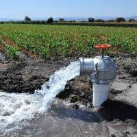
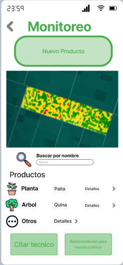
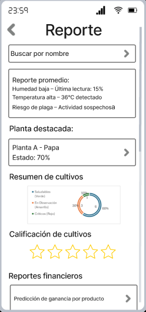
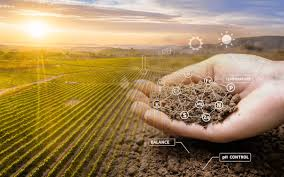

Descarga nuestra app


Detecta diferentes plagas y enfermedades en etapa temprana en tus cultivos.

Aumenta la eficiencia de recursos y reduce el costo de producción.
Calculadora basada en datos, prediciendo las ganancias de las cosechas.
Monitoreo constante de las condiciones del cultivo (temperatura, humedad, enfermedades, etc).
Navegador con conocimiento de diversas plagas, enfermedades, pesticidas y abonos.



Somos una plataforma innovadora que busca utilizar la inteligencia artificial y la visión por computadora para mejorar la gestión de cultivos.
Empoderar a los agricultores para usar la IA para mejorar el cuidado de cultivos y promover la agricultura sostenible y eficiente.
Hacer que la tecnología sea un aliado claro para todos los agricultores, ayudando a sus cultivos y apoyando un futuro agrario más sostenible y productivo.